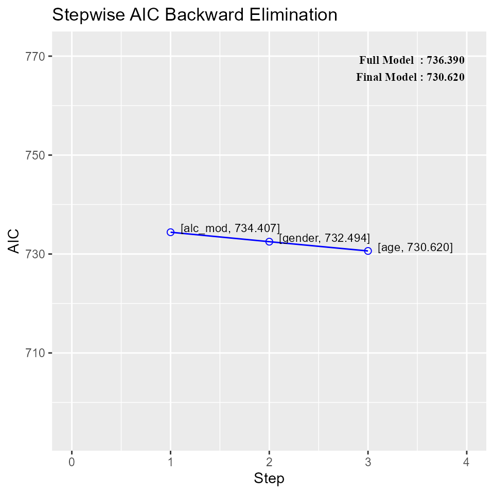

Introduction to olsrr
2017-02-13
The olsrr package makes some part of model building process easy by:
- generating comprehensive regression output
- demonstrating multiple model selection methods
- providing multiple residual diagnostics
- validating various model assumptions
Regression
regress(mpg ~ disp + hp + wt + qsec, data = mtcars)## Model Summary
## --------------------------------------------------------------
## R 0.914 RMSE 2.622
## R-Squared 0.835 Coef. Var 13.051
## Adj. R-Squared 0.811 MSE 6.875
## Pred R-Squared 0.771 MAE 1.858
## --------------------------------------------------------------
## RMSE: Root Mean Square Error
## MSE: Mean Square Error
## MAE: Mean Absolute Error
##
## ANOVA
## ----------------------------------------------------------------
## Sum of
## Squares DF Mean Square F Sig.
## ----------------------------------------------------------------
## Regression 940.412 4 235.103 34.197 0.0000
## Residual 185.635 27 6.875
## Total 1126.047 31
## ----------------------------------------------------------------
##
## Parameter Estimates
## ----------------------------------------------------------------------------------------
## model Beta Std. Error Std. Beta t Sig lower upper
## ----------------------------------------------------------------------------------------
## (Intercept) 27.330 8.639 3.164 0.004 9.604 45.055
## disp 0.003 0.011 0.055 0.248 0.806 -0.019 0.025
## hp -0.019 0.016 -0.212 -1.196 0.242 -0.051 0.013
## wt -4.609 1.266 -0.748 -3.641 0.001 -7.206 -2.012
## qsec 0.544 0.466 0.161 1.166 0.254 -0.413 1.501
## ----------------------------------------------------------------------------------------Residual Diagnostics
Residual QQ Plot
Graph for detecting violation of normality assumption.
model <- lm(mpg ~ disp + hp + wt + qsec, data = mtcars)
qqresid(model)
Residual Histogram
Histogram of residuals for detecting violation of normality assumption.
model <- lm(mpg ~ disp + hp + wt + qsec, data = mtcars)
hist_resid(model)
Residual Box Plot
A box plot of residuals is used to detect violation of the homoscedasticity assumption.
model <- lm(mpg ~ disp + hp + wt + qsec, data = mtcars)
box_resid(model)
Residual Normality Test
Test for detecting violation of normality assumption.
model <- lm(mpg ~ disp + hp + wt + qsec, data = mtcars)
norm_test(model)## -----------------------------------------------
## Test Statistic pvalue
## -----------------------------------------------
## Shapiro-Wilk 0.9366 0.06
## Kolmogorov-Smirnov 0.1152 0.7464
## Cramer-von Mises 2.8122 0
## Anderson-Darling 0.5859 0.1188
## -----------------------------------------------Correlation between observed residuals and expected residuals under normality.
model <- lm(mpg ~ disp + hp + wt + qsec, data = mtcars)
corr_test(model)## [1] 0.970066Residual vs Regressor Plots
Graph to determine whether we should add a new predictor to the model already containing other predictors. The residuals from the model is regressed on the new predictor and if the plot shows non random pattern, you should consider adding the new predictor to the model.
model <- lm(mpg ~ disp + hp + wt, data = mtcars)
rvsr_plot(model, mtcars$drat)
Residual vs Fitted Values Plot
Plot to detect non-linearity, unequal error variances, and outliers.
model <- lm(mpg ~ disp + hp + wt + qsec, data = mtcars)
rvsp_plot(model)
Measure of Influence
Cook’s D Bar Plot
Bar Plot of Cook’s distance to detect observations that strongly influence fitted values of the model.
model <- lm(mpg ~ disp + hp + wt + qsec, data = mtcars)
cooksd_bplot(model)
Cook’s D Chart
Chart of Cook’s distance to detect observations that strongly influence fitted values of the model.
model <- lm(mpg ~ disp + hp + wt + qsec, data = mtcars)
cooksd_chart(model)
DFBETAs Panel
DFBETAs measure the difference in each parameter estimate with and without the influential observation. dfbetas_panel creates plots to detect influential observations using DFBETAs.
model <- lm(mpg ~ disp + hp + wt, data = mtcars)
dfbetas_panel(model)


DFFITS Plot
Proposed by Welsch and Kuh (1977). It is the scaled difference between the \(i^{th}\) fitted value obtained from the full data and the \(i^{th}\) fitted value obtained by deleting the \(i^{th}\) observation.
model <- lm(mpg ~ disp + hp + wt + qsec, data = mtcars)
dffits_plot(model)
Studentized Residual Plot
Plot for detecting outliers.
model <- lm(mpg ~ disp + hp + wt + qsec, data = mtcars)
srplot(model)## Warning: Removed 5 rows containing missing values (position_stack).## Warning: Stacking not well defined when ymin != 0
Studentized Residual Chart
Chart for detecting outliers.
model <- lm(mpg ~ disp + hp + wt + qsec, data = mtcars)
studres_chart(model)
Studentized Residuals vs Leverage Plot
Graph for detecting influential observations.
model <- lm(mpg ~ disp + hp + wt + qsec, data = mtcars)
studvslev_plot(model)
Deleted Studentized Residual vs Fitted Values Plot
model <- lm(mpg ~ disp + hp + wt + qsec, data = mtcars)
dsrvsp_plot(model)
Hadi Plot
Hadi’s measure of influence based on the fact that influential observations can be present in either the response variable or in the predictors or both. The plot is used to detect influential observations based on Hadi’s measure.
model <- lm(mpg ~ disp + hp + wt + qsec, data = mtcars)
hadi_plot(model)
Potential Residual Plot
Plot to aid in classifying unusual observations as high-leverage points, outliers, or a combination of both.
model <- lm(mpg ~ disp + hp + wt + qsec, data = mtcars)
poten_resid_plot(model)
Model Fit Assessment
Residual Fit Spread Plot
Plot to detect non-linearity, influential observations and outliers.
model <- lm(mpg ~ disp + hp + wt + qsec, data = mtcars)
rfs_plot(model)
Part & Partial Correlations
Correlations
Relative importance of independent variables in determining Y. How much each variable uniquely contributes to \(R^{2}\) over and above that which can be accounted for by the other predictors.
Zero Order
Pearson correlation coefficient between the dependent variable and the independent variables.
Part
Unique contribution of independent variables. How much \(R^{2}\) will decrease if that variable is removed from the model?
Partial
How much of the variance in Y, which is not estimated by the other independent variables in the model, is estimated by the specific variable?
model <- lm(mpg ~ disp + hp + wt + qsec, data = mtcars)
correlations(model)## Correlations
## -------------------------------------------
## Variable Zero Order Partial Part
## -------------------------------------------
## disp -0.848 -0.048 -0.019
## hp -0.776 -0.224 -0.093
## wt -0.868 -0.574 -0.285
## qsec 0.419 0.219 0.091
## -------------------------------------------Observed vs Predicted Plot
Plot of observed vs fitted values to assess the fit of the model.
model <- lm(mpg ~ disp + hp + wt + qsec, data = mtcars)
ovsp_plot(model)
Lack of Fit F Test
Assess how much of the error in prediction is due to lack of model fit.
model <- lm(mpg ~ disp, data = mtcars)
pure_error_anova(model)## Lack of Fit F Test
## -----------------
## Response : mpg
## Predictor: disp
##
## Analysis of Variance Table
## ------------------------------------------------------------
## DF Sum Sq Mean Sq F Value Pr(>F)
## ------------------------------------------------------------
## disp 1 808.89 808.89 314.01 0.00
## Residual 30 317.16 10.57
## Lack of fit 25 304.28 12.17 4.72 0.05
## Pure Error 5 12.88 2.58
## ------------------------------------------------------------Diagnostics Panel
Panel of plots for regression diagnostics
model <- lm(mpg ~ disp + hp + wt + qsec, data = mtcars)
diag_panel(model)
Variable Contributions
Added Variable Plot
Added variable plot provides information about the marginal importance of a predictor variable \(X_{k}\), given the other predictor variables already in the model. It shows the marginal importance of the variable in reducing the residual variability.
model <- lm(mpg ~ disp + hp + wt + qsec, data = mtcars)
addvar_plot(model)


Residual Plus Component Plot
The residual plus component plot indicates whether any non-linearity is present in the relationship between response and predictor variables and can suggest possible transformations for linearizing the data.
model <- lm(mpg ~ disp + hp + wt + qsec, data = mtcars)
cplusr_plot(model)


Heteroskedasticity
Bartlett Test
Bartlett’s test is used to test if variances across samples is equal. It is sensitive to departures from normality. The Levene test is an alternative test that is less sensitive to departures from normality.
Use grouping variable
model <- lm(mpg ~ disp + hp, data = mtcars)
resid <- residuals(model)
cyl <- as.factor(mtcars$cyl)
bartlett_test(resid, group_var = cyl)##
## Bartlett's Test of Homogenity of Variances
## ------------------------------------------------
## Ho: Variances are equal across groups
## Ha: Variances are unequal for atleast two groups
##
## Data
## ------------------------
## Variable : resid
## Grouping Variable: cyl
##
## Test Summary
## ------------------------
## DF = 2
## Chi2 = 3.648
## Prob > Chi2 = 0.161Using variables
bartlett_test(hsb$read, hsb$write)##
## Bartlett's Test of Homogenity of Variances
## ------------------------------------------------
## Ho: Variances are equal across groups
## Ha: Variances are unequal for atleast two groups
##
## Data
## ---------------------
## Variables: read write
##
## Test Summary
## ------------------------
## DF = 1
## Chi2 = 1.223
## Prob > Chi2 = 0.269Using formula
mt <- mtcars
mt$cyl <- as.factor(mt$cyl)
bartlett_test(mpg ~ cyl, data = mt)##
## Bartlett's Test of Homogenity of Variances
## ------------------------------------------------
## Ho: Variances are equal across groups
## Ha: Variances are unequal for atleast two groups
##
## Data
## ----------------------------
## Variable : var
## Grouping Variable: group_var
##
## Test Summary
## ------------------------
## DF = 2
## Chi2 = 8.393
## Prob > Chi2 = 0.015Using linear model
model <- lm(mpg ~ cyl, data = mt)
bartlett_test(model)##
## Bartlett's Test of Homogenity of Variances
## ------------------------------------------------
## Ho: Variances are equal across groups
## Ha: Variances are unequal for atleast two groups
##
## Data
## ----------------------------
## Variable : var
## Grouping Variable: group_var
##
## Test Summary
## ------------------------
## DF = 2
## Chi2 = 8.393
## Prob > Chi2 = 0.015Breusch Pagan Test
Breusch Pagan test is used to test for herteroskedasticity (non-constant error variance). It tests whether the variance of the errors from a regression is dependent on the values of the independent variables. It is a \(\chi^{2}\) test.
Use fitted values of the model
model <- lm(mpg ~ disp + hp + wt + drat, data = mtcars)
bp_test(model)##
## Breusch Pagan Test for Heteroskedasticity
## -----------------------------------------
## Ho: the variance is constant
## Ha: the variance is not constant
##
## Data
## -------------------------------
## Response : mpg
## Variables: fitted values of mpg
##
## Test Summary
## -------------------------
## DF = 1
## Chi2 = 1.4297
## Prob > Chi2 = 0.2318Use independent variables of the model
model <- lm(mpg ~ disp + hp + wt + drat, data = mtcars)
bp_test(model, rhs = TRUE)##
## Breusch Pagan Test for Heteroskedasticity
## -----------------------------------------
## Ho: the variance is constant
## Ha: the variance is not constant
##
## Data
## --------------------------
## Response : mpg
## Variables: disp hp wt drat
##
## Test Summary
## -------------------------
## DF = 4
## Chi2 = 1.5138
## Prob > Chi2 = 0.8242Use independent variables of the model and perform multiple tests
model <- lm(mpg ~ disp + hp + wt + drat, data = mtcars)
bp_test(model, rhs = TRUE, multiple = TRUE)##
## Breusch Pagan Test for Heteroskedasticity
## -----------------------------------------
## Ho: the variance is constant
## Ha: the variance is not constant
##
## Data
## --------------------------
## Response : mpg
## Variables: disp hp wt drat
##
## Test Summary (Unadjusted p values)
## ----------------------------------------
## Variable chi2 df p
## ----------------------------------------
## disp 1.2355 1 0.2663
## hp 0.9210 1 0.3372
## wt 1.2530 1 0.2630
## drat 1.1668 1 0.2800
## ----------------------------------------
## simultaneous 1.5138 4 0.8242
## ----------------------------------------Bonferroni p value Adjustment
model <- lm(mpg ~ disp + hp + wt + drat, data = mtcars)
bp_test(model, rhs = TRUE, multiple = TRUE, p.adj = 'bonferroni')##
## Breusch Pagan Test for Heteroskedasticity
## -----------------------------------------
## Ho: the variance is constant
## Ha: the variance is not constant
##
## Data
## --------------------------
## Response : mpg
## Variables: disp hp wt drat
##
## Test Summary (Bonferroni p values)
## ----------------------------------------
## Variable chi2 df p
## ----------------------------------------
## disp 1.2355 1 1.0000
## hp 0.9210 1 1.0000
## wt 1.2530 1 1.0000
## drat 1.1668 1 1.0000
## ----------------------------------------
## simultaneous 1.5138 4 0.8242
## ----------------------------------------Sidak p value Adjustment
model <- lm(mpg ~ disp + hp + wt + drat, data = mtcars)
bp_test(model, rhs = TRUE, multiple = TRUE, p.adj = 'sidak')##
## Breusch Pagan Test for Heteroskedasticity
## -----------------------------------------
## Ho: the variance is constant
## Ha: the variance is not constant
##
## Data
## --------------------------
## Response : mpg
## Variables: disp hp wt drat
##
## Test Summary (Sidak p values)
## ----------------------------------------
## Variable chi2 df p
## ----------------------------------------
## disp 1.2355 1 0.7103
## hp 0.9210 1 0.8070
## wt 1.2530 1 0.7049
## drat 1.1668 1 0.7313
## ----------------------------------------
## simultaneous 1.5138 4 0.8242
## ----------------------------------------Holm’s p value Adjustment
model <- lm(mpg ~ disp + hp + wt + drat, data = mtcars)
bp_test(model, rhs = TRUE, multiple = TRUE, p.adj = 'holm')##
## Breusch Pagan Test for Heteroskedasticity
## -----------------------------------------
## Ho: the variance is constant
## Ha: the variance is not constant
##
## Data
## --------------------------
## Response : mpg
## Variables: disp hp wt drat
##
## Test Summary (Holm's p values)
## ----------------------------------------
## Variable chi2 df p
## ----------------------------------------
## disp 1.2355 1 0.7990
## hp 0.9210 1 0.3372
## wt 1.2530 1 1.0000
## drat 1.1668 1 0.5601
## ----------------------------------------
## simultaneous 1.5138 4 0.8242
## ----------------------------------------Score Test
Test for heteroskedasticity under the assumption that the errors are independent and identically distributed (i.i.d.).
Use fitted values of the model
model <- lm(mpg ~ disp + hp + wt + qsec, data = mtcars)
score_test(model)##
## Score Test for Heteroskedasticity
## ---------------------------------
## Ho: Variance is homogenous
## Ha: Variance is not homogenous
##
## Variables: fitted values of mpg
##
## Test Summary
## ------------------------
## DF = 1
## Chi2 = 0.516
## Prob > Chi2 = 0.472Use independent variables of the model
model <- lm(mpg ~ disp + hp + wt + qsec, data = mtcars)
score_test(model, rhs = TRUE)##
## Score Test for Heteroskedasticity
## ---------------------------------
## Ho: Variance is homogenous
## Ha: Variance is not homogenous
##
## Variables: disp hp wt qsec
##
## Test Summary
## ------------------------
## DF = 4
## Chi2 = 2.039
## Prob > Chi2 = 0.729Specify variables
model <- lm(mpg ~ disp + hp + wt + qsec, data = mtcars)
score_test(model, vars = c('disp', 'hp'))##
## Score Test for Heteroskedasticity
## ---------------------------------
## Ho: Variance is homogenous
## Ha: Variance is not homogenous
##
## Variables:
##
## Test Summary
## ------------------------
## DF = 2
## Chi2 = 0.998
## Prob > Chi2 = 0.607F Test
F Test for heteroskedasticity under the assumption that the errors are independent and identically distributed (i.i.d.).
Use fitted values of the model
model <- lm(mpg ~ disp + hp + wt + qsec, data = mtcars)
f_test(model)##
## F Test for Heteroskedasticity
## -----------------------------
## Ho: Variance is homogenous
## Ha: Variance is not homogenous
##
## Variables: fitted values of mpg
##
## Test Summary
## ---------------------
## Num DF = 1
## Den DF = 30
## F = 0.492
## Prob > F = 0.488Use independent variables of the model
model <- lm(mpg ~ disp + hp + wt + qsec, data = mtcars)
f_test(model, rhs = TRUE)##
## F Test for Heteroskedasticity
## -----------------------------
## Ho: Variance is homogenous
## Ha: Variance is not homogenous
##
## Variables: disp hp wt qsec
##
## Test Summary
## ---------------------
## Num DF = 4
## Den DF = 27
## F = 0.459
## Prob > F = 0.765Specify variables
model <- lm(mpg ~ disp + hp + wt + qsec, data = mtcars)
f_test(model, vars = c('disp', 'hp'))##
## F Test for Heteroskedasticity
## -----------------------------
## Ho: Variance is homogenous
## Ha: Variance is not homogenous
##
## Variables: disp hp
##
## Test Summary
## ---------------------
## Num DF = 2
## Den DF = 29
## F = 0.467
## Prob > F = 0.632Collinearity Diagnostics
Collinearity implies two variables are near perfect linear combinations of one another. Multicollinearity involves more than two variables. In the presence of multicollinearity, regression estimates are unstable and have high standard errors.
VIF
Variance inflation factors measure the inflation in the variances of the parameter estimates due to collinearities that exist among the predictors. It is a measure of how much the variance of the estimated regression coefficient \(\beta_{k}\) is “inflated” by the existence of correlation among the predictor variables in the model. A VIF of 1 means that there is no correlation among the kth predictor and the remaining predictor variables, and hence the variance of \(\beta_{k}\) is not inflated at all. The general rule of thumb is that VIFs exceeding 4 warrant further investigation, while VIFs exceeding 10 are signs of serious multicollinearity requiring correction.
Steps to calculate VIF:
- Regress the \(k^{th}\) predictor on rest of the predictors in the model.
- Compute the \({R}^{2}_{k}\)
\[VIF = \frac{1}{1 - {R}^{2}_{k}} = \frac{1}{Tolerance}\]
model <- lm(mpg ~ disp + hp + wt + qsec, data = mtcars)
vif_tol(model)## # A tibble: 4 × 3
## Variables Tolerance VIF
## <chr> <dbl> <dbl>
## 1 disp 0.125 7.985
## 2 hp 0.194 5.167
## 3 wt 0.145 6.917
## 4 qsec 0.319 3.133Tolerance
Percent of variance in the predictor that cannot be accounted for by other predictors.
Steps to calculate tolerance:
- Regress the \(k^{th}\) predictor on rest of the predictors in the model.
- Compute the \({R}^{2}_{k}\)
\[Tolerance = 1 - {R}^{2}_{k}\]
Condition Index
Most multivariate statistical approaches involve decomposing a correlation matrix into linear combinations of variables. The linear combinations are chosen so that the first combination has the largest possible variance (subject to some restrictions we won’t discuss), the second combination has the next largest variance, subject to being uncorrelated with the first, the third has the largest possible variance, subject to being uncorrelated with the first and second, and so forth. The variance of each of these linear combinations is called an eigenvalue. Collinearity is spotted by finding 2 or more variables that have large proportions of variance (.50 or more) that correspond to large condition indices. A rule of thumb is to label as large those condition indices in the range of 30 or larger.
model <- lm(mpg ~ disp + hp + wt + qsec, data = mtcars)
eigen_cindex(model)## Eigenvalue Condition Index intercept disp hp wt qsec
## 1 4.721 1.000 0.00 0.00 0.00 0.00 0.00
## 2 0.217 4.669 0.00 0.04 0.03 0.00 0.00
## 3 0.050 9.677 0.00 0.12 0.39 0.04 0.00
## 4 0.010 21.616 0.03 0.78 0.06 0.70 0.00
## 5 0.001 57.481 0.97 0.06 0.52 0.26 0.99Collinearity Diagnostics
model <- lm(mpg ~ disp + hp + wt + qsec, data = mtcars)
coll_diag(model)## Tolerance and Variance Inflation Factor
## ---------------------------------------
## # A tibble: 4 × 3
## Variables Tolerance VIF
## <chr> <dbl> <dbl>
## 1 disp 0.125 7.985
## 2 hp 0.194 5.167
## 3 wt 0.145 6.917
## 4 qsec 0.319 3.133
##
##
## Eigenvalue and Condition Index
## ------------------------------
## Eigenvalue Condition Index intercept disp hp wt qsec
## 1 4.721 1.000 0.00 0.00 0.00 0.00 0.00
## 2 0.217 4.669 0.00 0.04 0.03 0.00 0.00
## 3 0.050 9.677 0.00 0.12 0.39 0.04 0.00
## 4 0.010 21.616 0.03 0.78 0.06 0.70 0.00
## 5 0.001 57.481 0.97 0.06 0.52 0.26 0.99Variable Selection Procedures
All Subset Regression
All subset regression tests all possible subsets of the set of potential independent variables. If there are K potential independent variables (besides the constant), then there are \(2^{k}\) distinct subsets of them to be tested. For example, if you have 10 candidate independent variables, the number of subsets to be tested is \(2^{10}\), which is 1024, and if you have 20 candidate variables, the number is \(2^{20}\), which is more than one million.
model <- lm(mpg ~ disp + hp + wt + qsec, data = mtcars)
all_subset(model)## Index N Predictors R-Square Adj. R-Square Mallow's Cp
## 1 1 1 wt 0.753 0.745 12.4809
## 2 2 1 disp 0.718 0.709 18.1296
## 3 3 1 hp 0.602 0.589 37.1126
## 4 4 1 qsec 0.175 0.148 107.0696
## 5 5 2 hp wt 0.827 0.815 2.369
## 6 6 2 wt qsec 0.826 0.814 2.4295
## 7 7 2 disp wt 0.781 0.766 9.8791
## 8 8 2 disp hp 0.748 0.731 15.2331
## 9 9 2 disp qsec 0.722 0.702 19.6028
## 10 10 2 hp qsec 0.637 0.612 33.4722
## 11 11 3 hp wt qsec 0.835 0.817 3.0617
## 12 12 3 disp hp wt 0.827 0.808 4.3607
## 13 13 3 disp wt qsec 0.826 0.808 4.4293
## 14 14 3 disp hp qsec 0.754 0.728 16.2578
## 15 15 4 disp hp wt qsec 0.835 0.811 5The plot method shows the panel of fit criteria for all possible regression methods.
model <- lm(mpg ~ disp + hp + wt + qsec, data = mtcars)
k <- all_subset(model)
plot(k)
Best Subset Regression
Select the subset of predictors that do the best at meeting some well-defined objective criterion, such as having the largest R2 value or the smallest MSE, Mallow’s Cp or AIC.
model <- lm(mpg ~ disp + hp + wt + qsec, data = mtcars)
best_subset(model)## Best Subsets Regression
## ------------------------------
## Model Index Predictors
## ------------------------------
## 1 wt
## 2 hp wt
## 3 hp wt qsec
## 4 disp hp wt qsec
## ------------------------------
##
## Subsets Regression Summary
## -------------------------------------------------------------------------------------------------------------------------------
## Adj. Pred
## Model R-Square R-Square R-Square C(p) AIC SBIC SBC GMSEP Jp Sp PC
## -------------------------------------------------------------------------------------------------------------------------------
## 1 0.7530 0.7450 0.7087 12.4809 166.0294 74.2916 170.4266 9.8972 9.8572 0.3199 0.2801
## 2 0.8270 0.8150 0.7811 2.3690 156.6523 66.5755 162.5153 7.4314 7.3563 0.2402 0.2090
## 3 0.8350 0.8170 0.782 3.0617 157.1426 67.7238 164.4713 7.6140 7.4756 0.2461 0.2124
## 4 0.8350 0.8110 0.771 5.0000 159.0696 70.0408 167.8640 8.1810 7.9497 0.2644 0.2259
## -------------------------------------------------------------------------------------------------------------------------------The plot method shows the panel of fit criteria for best subset regression methods.
model <- lm(mpg ~ disp + hp + wt + qsec, data = mtcars)
k <- best_subset(model)
plot(k)
Stepwise Forward Regression
Build regression model from a set of candidate predictor variables by entering predictors based on p values, in a stepwise manner until there is no variable left to enter any more.
Variable Selection
# stepwise forward regression
model <- lm(y ~ ., data = surgical)
step_forward(model)## We are selecting variables based on p value...## 1 variable(s) added....## 1 variable(s) added...
## 1 variable(s) added...
## 1 variable(s) added...
## 1 variable(s) added...## No more variables satisfy the condition of penter: 0.3## Forward Selection Method
##
## Candidate Terms:
##
## 1 . bcs
## 2 . pindex
## 3 . enzyme_test
## 4 . liver_test
## 5 . age
## 6 . gender
## 7 . alc_mod
## 8 . alc_heavy
##
## ------------------------------------------------------------------------------
## Selection Summary
## ------------------------------------------------------------------------------
## Variable Adj.
## Step Entered R-Square R-Square C(p) AIC RMSE
## ------------------------------------------------------------------------------
## 1 liver_test 0.455 0.444 62.5119 771.8753 296.2992
## 2 alc_heavy 0.567 0.550 41.3681 761.4394 266.6484
## 3 enzyme_test 0.659 0.639 24.3379 750.5089 238.9145
## 4 pindex 0.750 0.730 7.5373 735.7146 206.5835
## 5 bcs 0.781 0.758 3.1925 730.6204 195.4544
## ------------------------------------------------------------------------------Plot
model <- lm(y ~ ., data = surgical)
k <- step_forward(model)## We are selecting variables based on p value...## 1 variable(s) added....## 1 variable(s) added...
## 1 variable(s) added...
## 1 variable(s) added...
## 1 variable(s) added...## No more variables satisfy the condition of penter: 0.3plot(k)
Stepwise Backward Regression
Build regression model from a set of candidate predictor variables by removing predictors based on p values, in a stepwise manner until there is no variable left to remove any more.
Variable Selection
# stepwise backward regression
model <- lm(y ~ ., data = surgical)
step_backward(model)## We are eliminating variables based on p value...## No more variables satisfy the condition of prem: 0.3## Backward Elimination Method
##
## Candidate Terms:
##
## 1 . bcs
## 2 . pindex
## 3 . enzyme_test
## 4 . liver_test
## 5 . age
## 6 . gender
## 7 . alc_mod
## 8 . alc_heavy
##
## --------------------------------------------------------------------------
## Elimination Summary
## --------------------------------------------------------------------------
## Variable Adj.
## Step Removed R-Square R-Square C(p) AIC RMSE
## --------------------------------------------------------------------------
## 1 alc_mod 0.782 0.749 7.0141 734.4068 199.2637
## 2 gender 0.781 0.754 5.0870 732.4942 197.2921
## 3 age 0.781 0.758 3.1925 730.6204 195.4544
## --------------------------------------------------------------------------Plot
model <- lm(y ~ ., data = surgical)
k <- step_backward(model)## We are eliminating variables based on p value...## No more variables satisfy the condition of prem: 0.3plot(k)
Stepwise Regression
Build regression model from a set of candidate predictor variables by entering and removing predictors based on p values, in a stepwise manner until there is no variable left to enter or remove any more.
Variable Selection
# stepwise regression
model <- lm(y ~ ., data = surgical)
stepwise(model)## We are selecting variables based on p value...## 1 variable(s) added....## 1 variable(s) added...
## 1 variable(s) added...
## 1 variable(s) added...
## 1 variable(s) added...## No more variables to be added or removed.## Stepwise Selection Method
##
## Candidate Terms:
##
## 1 . bcs
## 2 . pindex
## 3 . enzyme_test
## 4 . liver_test
## 5 . age
## 6 . gender
## 7 . alc_mod
## 8 . alc_heavy
##
## ------------------------------------------------------------------------------------------
## Stepwise Selection Summary
## ------------------------------------------------------------------------------------------
## Added/ Adj.
## Step Variable Removed R-Square R-Square C(p) AIC RMSE
## ------------------------------------------------------------------------------------------
## 1 liver_test addition 0.455 0.444 62.5119 771.8753 296.2992
## 2 alc_heavy addition 0.567 0.550 41.3681 761.4394 266.6484
## 3 enzyme_test addition 0.659 0.639 24.3379 750.5089 238.9145
## 4 pindex addition 0.750 0.730 7.5373 735.7146 206.5835
## 5 bcs addition 0.781 0.758 3.1925 730.6204 195.4544
## ------------------------------------------------------------------------------------------Plot
model <- lm(y ~ ., data = surgical)
k <- stepwise(model)## We are selecting variables based on p value...## 1 variable(s) added....## 1 variable(s) added...
## 1 variable(s) added...
## 1 variable(s) added...
## 1 variable(s) added...## No more variables to be added or removed.plot(k)
Stepwise AIC Forward Regression
Build regression model from a set of candidate predictor variables by entering predictors based on Akaike Information Criteria, in a stepwise manner until there is no variable left to enter any more.
Variable Selection
# stepwise aic forward regression
model <- lm(y ~ ., data = surgical)
stepaic_forward(model)## ---------------------------------------------------------------------------
## Variable AIC Sum Sq RSS R-Sq Adj. R-Sq
## ---------------------------------------------------------------------------
## liver_test 771.8753 3804272.477 4565248.06 0.455 0.444
## alc_heavy 761.4394 4743349.776 3626170.761 0.567 0.55
## enzyme_test 750.5089 5515514.136 2854006.401 0.659 0.639
## pindex 735.7146 6278360.06 2091160.477 0.75 0.73
## bcs 730.6204 6535804.09 1833716.447 0.781 0.758
## ---------------------------------------------------------------------------
Stepwise AIC Backward Regression
Build regression model from a set of candidate predictor variables by removing predictors based on Akaike Information Criteria, in a stepwise manner until there is no variable left to remove any more.
Variable Selection
# stepwise aic backward regression
model <- lm(y ~ ., data = surgical)
k <- stepaic_backward(model)
k##
##
## Backward Elimination Summary
## -------------------------------------------------------------------------
## Variable AIC RSS Sum Sq R-Sq Adj. R-Sq
## -------------------------------------------------------------------------
## Full Model 736.39 1825905.713 6543614.824 0.782 0.743
## alc_mod 734.407 1826477.828 6543042.709 0.782 0.749
## gender 732.494 1829435.617 6540084.92 0.781 0.754
## age 730.62 1833716.447 6535804.09 0.781 0.758
## -------------------------------------------------------------------------#### Plotmodel <- lm(y ~ ., data = surgical)
k <- stepaic_backward(model)
plot(k)
Stepwise AIC Regression
Build regression model from a set of candidate predictor variables by entering and removing predictors based on Akaike Information Criteria, in a stepwise manner until there is no variable left to enter or remove any more.
Variable Selection
# stepwise aic backward regression
model <- lm(y ~ ., data = surgical)
stepaic_both(model)## No more variables to be added or removed.##
##
## Stepwise Summary
## --------------------------------------------------------------------------------------
## Variable Method AIC RSS Sum Sq R-Sq Adj. R-Sq
## --------------------------------------------------------------------------------------
## liver_test addition 771.875 4565248.06 3804272.477 0.455 0.444
## alc_heavy addition 761.439 3626170.761 4743349.776 0.567 0.55
## enzyme_test addition 750.509 2854006.401 5515514.136 0.659 0.639
## pindex addition 735.715 2091160.477 6278360.06 0.75 0.73
## bcs addition 730.62 1833716.447 6535804.09 0.781 0.758
## --------------------------------------------------------------------------------------Plot
model <- lm(y ~ ., data = surgical)
k <- stepaic_both(model)## No more variables to be added or removed.plot(k)